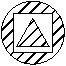
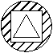
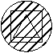

Создание штриховок
Замкнутые границы могут быть заполнены текстурой по заданному образцу (паттерну), образуя тем самым объект Штриховка. Сперва создается только определение штриховки (объект класса Hatch), для него задаются настройки отрисовки (тип штриховки, имя образца/паттерна, флаг ассоциативности). После этого можно указать контур, который будет являться внешней границей штриховки. Затем можно указать любые внутренние контуры, которые могут быть внутри штриховки.
Внимание: после создания определения штриховки изменить её свойство ассоциативности будет не возможно.
Ассоциативность штриховок
Вы можете создавать ассоциативные или неассоциативные штриховки. Ассоциативные штриховки будут связаны со своими границами и обновлятся при изменении границ. Неассоциативные штриховки соответственно не будут авто-изменены при изменении геометрии границ. Чтобы сделать штриховку ассоциативной, установите свойство Associative созданного объекта штриховки в значение true. Чтобы сделать штриховку неассоциативной, установите свойство Associative в значение false. Ассоциативность штриховки должна быть установлена до добавления в штриховку контуров. Чтобы сделать объект штриховки ассоциативным, установите свойство Associative в значение true, удалите объект из состава контура штриховки (RemoveLoopAt) и добавьте этот объект снова (AppendLoop).
Особенности задания образца штриховки
AutoCAD предоставляет сплошную заливку (SOLID) и десятки иных стандартных образцов штриховок. Разные стили образцов способны облегчить работу с визуальной идентификацией объектов. Возможно использовать образцы штриховок из поставки AutoCAD, либо из внешних подключаемых файлов. Чтобы задать пользовательский образец штриховки, необходимо указать как тип образца (гдеAutoCAD'у его искать), так и наименование самого образца штриховки. Тип образца определяет, где искать имя данного образца штриховки. При вводе типа образца используйте одну из следующих констант:
-
HatchPatternType.PreDefined: имя образца штриховки из файлов acad.pat или acadiso.pat; -
HatchPatternType.UserDefined: используется шаблон в соответствии с текущим свойством Linetype; -
HatchPatternType.CustomDefined: имя образца штриховки ищется в подключенных PAT файлах кроме системных acad.pat и acadiso.pat; При вводе имени образца используйте имя, допустимое для файла:определения штриховки в соответствии с её типом, указанным выше.Задание границ штриховке
После создания определения штриховки Hatch можно добавить к ней границы. Границы могут представлять собой любую комбинацию линий, дуг, окружностей, двумерных полилиний, эллипсов, сплайнов и областей (Region). Первая добавленная граница должна быть внешней, определяющей крайние контуры, которые будут заполнены штриховкой. Для добавления внешней границы используйте метод AppendLoop с константой HatchLoopTypes.Outermost, указывающей тип добавляемой границы. После определения внешней границы можно продолжить добавление дополнительных границ. Добавьте внутренние границы, используя метод AppendLoop с константой HatchLoopTypes.Default. Внутренние границы определяют "острова" внутри штриховки. Способ обработки этих "островов" объектом Hatch зависит от значения свойства HatchStyle. Свойство HatchStyle может быть установлено в одно из следующих значений:
Схема действия Поведение Описание 
Обычная (HatchStyle.Normal) Задает стандартный стиль -- значение по умолчанию для свойства HatchStyle. Этот параметр заштриховывает область "снаружи -- внутрь". Если AutoCAD встречает внутреннюю границу, он отключает штриховку до тех пор, пока не встретит другую границу 
Только внешние границы (HatchStyle.Outer) Заполняет только самые внешние области. Этот стиль также штрихует по пути "снаружи -- внутрь", но отключает штриховку, если встречает внутреннюю границу, и не включает её снова. 
Пропуск (HatchStyle.Ignore) Игнорирует внутреннюю структуру. Этот параметр заштриховывает все внутренние контуры
После завершения определения штриховки её необходимо перестроить, прежде чем она сможет отобразиться. Для этого используйте метод EvaluateHatch(true).
using Autodesk.AutoCAD.Runtime;
using Autodesk.AutoCAD.ApplicationServices;
using Autodesk.AutoCAD.DatabaseServices;
using Autodesk.AutoCAD.Geometry;
[CommandMethod("AddHatch")]
public static void AddHatch()
{
// Get the current document and database
Document acDoc = Application.DocumentManager.MdiActiveDocument;
Database acCurDb = acDoc.Database;
// Start a transaction
using (Transaction acTrans = acCurDb.TransactionManager.StartTransaction())
{
// Open the Block table for read
BlockTable acBlkTbl;
acBlkTbl = acTrans.GetObject(acCurDb.BlockTableId,
OpenMode.ForRead) as BlockTable;
// Open the Block table record Model space for write
BlockTableRecord acBlkTblRec;
acBlkTblRec = acTrans.GetObject(acBlkTbl[BlockTableRecord.ModelSpace],
OpenMode.ForWrite) as BlockTableRecord;
// Create a circle object for the closed boundary to hatch
using (Circle acCirc = new Circle())
{
acCirc.Center = new Point3d(3, 3, 0);
acCirc.Radius = 1;
// Add the new circle object to the block table record and the transaction
acBlkTblRec.AppendEntity(acCirc);
acTrans.AddNewlyCreatedDBObject(acCirc, true);
// Adds the circle to an object id array
ObjectIdCollection acObjIdColl = new ObjectIdCollection();
acObjIdColl.Add(acCirc.ObjectId);
// Create the hatch object and append it to the block table record
using (Hatch acHatch = new Hatch())
{
acBlkTblRec.AppendEntity(acHatch);
acTrans.AddNewlyCreatedDBObject(acHatch, true);
// Set the properties of the hatch object
// Associative must be set after the hatch object is appended to the
// block table record and before AppendLoop
acHatch.SetHatchPattern(HatchPatternType.PreDefined, "ANSI31");
acHatch.Associative = true;
acHatch.AppendLoop(HatchLoopTypes.Outermost, acObjIdColl);
acHatch.EvaluateHatch(true);
}
}
// Save the new object to the database
acTrans.Commit();
}
}
При создании штриховки в памяти удобнее пользоваться перегрузкой для AppendLoop, принимающей Point2dCollection, если контур штриховки задается ломаными, в этом случае нет необходимости в полилиниях.